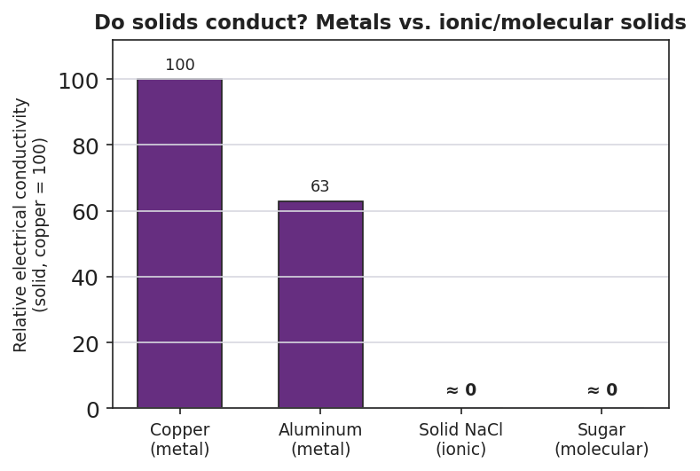

01 Phenomenon
Your teacher holds two solids. The first is a copper wire: bend it into a loop, a zigzag, a spiral — it changes shape and stays bent. The second is a salt crystal: tap it once with a hammer (inside a bag, behind goggles) and it does not bend — it shatters into smaller cubic pieces. Both are hard, crystalline solids held together by strong electrical forces between charged particles. Same action — a push. Completely different result: one flows into a new shape, the other fractures.
02 Driving question
Why can you bend a copper wire into any shape you want, but a salt crystal shatters the instant you strike it?
03 Notice & wonder
| I notice… | I wonder… |
|---|---|
Turn & Talk #1: Look at the diagram your teacher is projecting — positive metal cores with tiny electrons scattered loose between them. If you shoved a row of those positive cores sideways, what could the loose electrons do that would let the metal hold together instead of cracking? Write your best one-sentence guess.
04 Initial model
Before your teacher names anything, draw your best guess at what is inside each solid. What kind of particles are there, and are they locked in place or free to move?
| Inside a metal (copper) | Inside an ionic solid (salt) |
|---|---|
One thing I am sure is different between them: _______________________________________________
05 Investigate
Part 1 — Metal-property exploration
Test each sample. For the bend test, try to reshape it without snapping it. For luster, scratch or polish it and look for shine. Record what you observe.
| Sample | Bends without breaking? | Shiny / lustrous? | Metal or non-metal? |
|---|---|---|---|
| Copper wire | |||
| Aluminum foil | |||
| Iron nail / steel washer | |||
| Magnesium ribbon | |||
| Graphite “pencil lead” (control) |
What pattern do all the metal samples share that the control does not? _______________________________________________
Part 2 — Conductivity testing
Use the conductivity tester (battery–bulb or multimeter). Record whether each solid completes the circuit.
| Sample | Bulb lights / meter reads? | Conducts as a solid? |
|---|---|---|
| Copper strip | ||
| Aluminum strip | ||
| Solid salt crystal (ionic) | ||
| Sugar cube (molecular) |
Now look at figures/conductivity_comparison.png:

Which two samples conducted electricity as solids? _______________________________________________
Which two did not? _______________________________________________
Key question: Your bend test showed metals reshape and salt shatters. Your conductivity test showed metals conduct and salt does not. Could ONE thing inside the metal explain both results at once? What might it be?
06 Make it make sense
For each scenario, identify the structure responsible and explain the property. Use evidence from your investigation.
A copper wire is bent into a tight spiral and does not break.
- What inside the copper lets it reshape instead of cracking? _______________________________________________
- Why doesn’t the metal split apart the way salt does? _______________________________________________
An aluminum strip lights the bulb on the conductivity tester, but a solid salt crystal does not.
- What must be true about the charges inside aluminum for it to conduct? _______________________________________________
- Why can’t the charges in solid salt carry current? _______________________________________________
A salt crystal is struck and cleaves into smaller cubes instead of flattening.
- What is the structural difference between salt and a metal? _______________________________________________
- When a layer of the salt lattice is forced to shift, what happens to the like-charged ions? _______________________________________________
07 Key vocabulary
- sea of electrons
- the model of metallic bonding in which a lattice of fixed positive metal cations is surrounded by valence electrons that are free to move throughout the entire metal; this mobile "sea" explains conductivity, malleability, ductility, and luster
- metallic cation
- a metal atom that has given up its valence electron(s) and therefore carries a positive charge; in a metal these cations sit fixed in a regular lattice, immersed in the electron sea, and can slide past one another when the metal is bent or hammered
- delocalized electron
- a valence electron that is not bound to any single atom but is free to move throughout the whole piece of metal; the movement of these electrons carries electric current (conductivity) and lets the cation lattice reshape without breaking
Use each term in a sentence about today’s phenomenon or investigation. Do not just copy the definition — describe something you actually observed or did.
sea of electrons: _______________________________________________ _______________________________________________
metallic cation: _______________________________________________ _______________________________________________
delocalized electron: _______________________________________________ _______________________________________________
08 Revise your model
Return to your Initial Model. Redraw the “inside a metal” picture using today’s model.
Draw the positive cores in a regular grid. Label them metallic cations.
Draw a cloud of small electrons moving in the spaces between them. Label it delocalized electrons.
Title the whole drawing the sea of electrons model.
For each property below, write the structure (cause) that produces it:
| Function (property) | Structure (cause) — fill this in |
|---|---|
| Electrical conductivity | |
| Malleability / ductility | |
| Luster (shine) |
Then finish this Because / But / So sentence:
A copper wire bends into a new shape, but a salt crystal shatters when struck, because __________________________________________, but __________________________________________, so __________________________________________.
09 Exit ticket
- Name the two kinds of particles in the “sea of electrons” model of a metal.
1: _________________________ 2: _________________________
- A silver spoon conducts electricity. Explain why, using the word delocalized.
- A gold bar can be hammered into a thin sheet (it is malleable), but a quartz crystal shatters when struck. In one or two sentences, explain the structural difference that causes this.
10 Explore further
- Metal-property exploration (stations): Set up small samples — copper wire, aluminum foil, an iron nail or steel washer, a strip of magnesium ribbon, a graphite pencil "lead" as a non-metal control. At each station students test and record: *Can I bend it without snapping it? Does it shine when scratched/polished? Does it feel cool and look reflective?* They build a property table before any vocabulary is named. This is the hands-on evidence base for the "sea of electrons" model.
- Conductivity testing — metals vs. ionic compounds: Using a simple battery–bulb (or multimeter) conductivity tester, students test a copper strip, an aluminum strip, a *solid* lump of an ionic compound (rock salt or a salt crystal), and a sugar cube. Result: the metals light the bulb; the solid salt and sugar do not. Connect to `figures/conductivity_comparison.png`. (Extension/contrast for a later lesson: the same salt *dissolved in water* will conduct — foreshadow electrolytes without teaching them here.)
- Javalab "Metallic Bond / Electron Sea" simulation (optional digital): an interactive lattice where students drag a "push" across a row of cations and watch the electron sea flow to keep the metal intact, versus an ionic lattice where the same shove forces like-charges together and the crystal cleaves. No external URL required; the `figures/sea_of_electrons.png` static model covers the same idea.